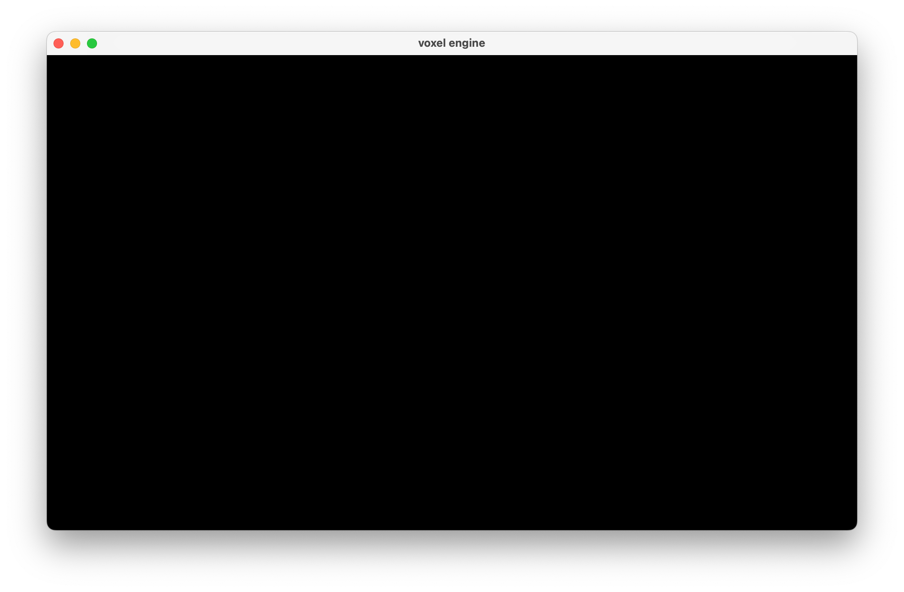

todo
1. Overview
Hi, so you want to make a voxel engine? Me too!
This will be our little weekend project where we go from a blank file to a voxel world you can walk around and interact with.
I'll be using Rust, but everything here should make sense no matter what language you're into. The focus isn't on the code but on the systems that come together to create a voxel engine.
2. Making a window
Okay, so first we need to create a window. There’s a bunch of ways to do this, but since we’ll be using OpenGL later, I’ll go with GLFW – it’s kind of the classic combo.
note: I won't be explaining every line of set-up code but if you need a more comprehensive guide on how to get everything ready you might want to check out LearnOpenGL
First we'll need to initialize GLFW
fn main() {
unsafe {
glfwInit();
glfwWindowHint(GLFW_CONTEXT_VERSION_MAJOR, 3);
glfwWindowHint(GLFW_CONTEXT_VERSION_MINOR, 3);
glfwWindowHint(GLFW_OPENGL_PROFILE, GLFW_OPENGL_CORE_PROFILE);
// if you're on a mac
glfwWindowHint(GLFW_OPENGL_FORWARD_COMPAT, 1);
}
}
and then create a window
...
let window = glfwCreateWindow(
1920,
1080,
c"voxel engine".as_ptr(),
null_mut(),
null_mut()
);
if window.is_null() {
println!("failed to create GLFW window");
return;
}
glfwMakeContextCurrent(window);
...
We'll also have to load the OpenGL functions, though how you do this might be very different based on the language you're using
...
gl::load_with(|s| {
let cstr = CString::new(s).unwrap();
let result = glfwGetProcAddress(cstr.as_ptr());
if result.is_null() {
println!("failed to load gl function '{s}'");
}
result
});
...
now we can just create an infinite loop and we will have our window!
...
loop {
glfwPollEvents();
}
...
note: in Rust the loop keyword creates an infinite loop. basically the same as while true
3. Hello Triangle
I know, I know. Basically every graphics tutorial starts with these two but there's a good reason for it. I promise it won't take too long but we do need to do it in order to ensure we have our pipeline set up properly
Let's start with moving all of our set-up into a Renderer class.
struct Renderer {
window: *mut glfw::Window,
}
impl Renderer {
pub fn new() {
unsafe {
glfwInit();
glfwWindowHint(GLFW_CONTEXT_VERSION_MAJOR, 3);
glfwWindowHint(GLFW_CONTEXT_VERSION_MINOR, 3);
glfwWindowHint(GLFW_OPENGL_PROFILE, GLFW_OPENGL_CORE_PROFILE);
glfwWindowHint(GLFW_OPENGL_FORWARD_COMPAT, 1);
let window = glfwCreateWindow(
1920,
1080,
c"voxel engine".as_ptr(),
null_mut(),
null_mut()
);
if window.is_null() {
println!("failed to create GLFW window");
return;
}
glfwMakeContextCurrent(window);
gl::load_with(|s| {
let cstr = CString::new(s).unwrap();
let result = glfwGetProcAddress(cstr.as_ptr());
if result.is_none() {
println!("failed to load gl function '{s}'");
}
result.map(|x| x as _).unwrap_or(null())
});
}
}
}
after that we can create some simple begin and end frame functions on the renderer
pub fn begin_frame(&mut self) {
unsafe {
gl::ClearColor(1.0, 1.0, 1.0, 1.0);
}
}
pub fn end_frame(&mut self) {
unsafe {
glfwSwapBuffers(self.window);
glfwPollEvents();
}
}

- Making a window
- Hello triangle
- Adding a camera
- Adding a cube
- Chunks 5.1) Meshing a chunk 5.2) Optimizing the mesh
- Chunk management
- Block types 7.1) Textures
- Physics (we'll go with simple aabb checks
- Interacting with the world
- Saving & loading the world
- challenges for the reader maybe am i qualiifed to even make a post like this.. damn